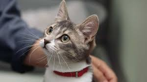
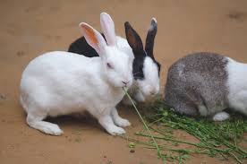

puppy
The dog (Canis familiaris or Canis lupus familiaris) is a domesticated descendant of the wolf. Also called the domestic dog,

leeza
The cat (Felis catus), commonly referred to as the domestic cat or house cat, is the only domesticated species in the family Felidae.

jully
Rabit (musician), American producer of electronic music Ranked Ballot Initiative of Toronto (RaBIT) Batak Rabit, a town in Malaysia